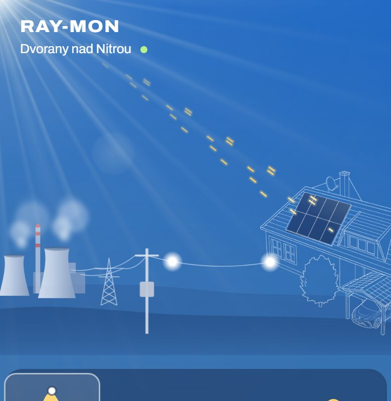
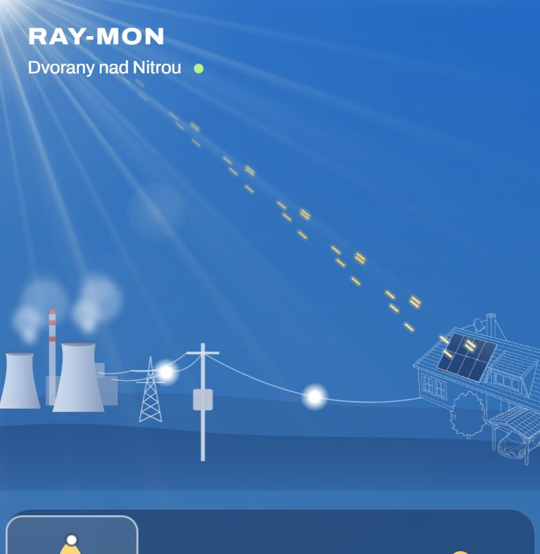
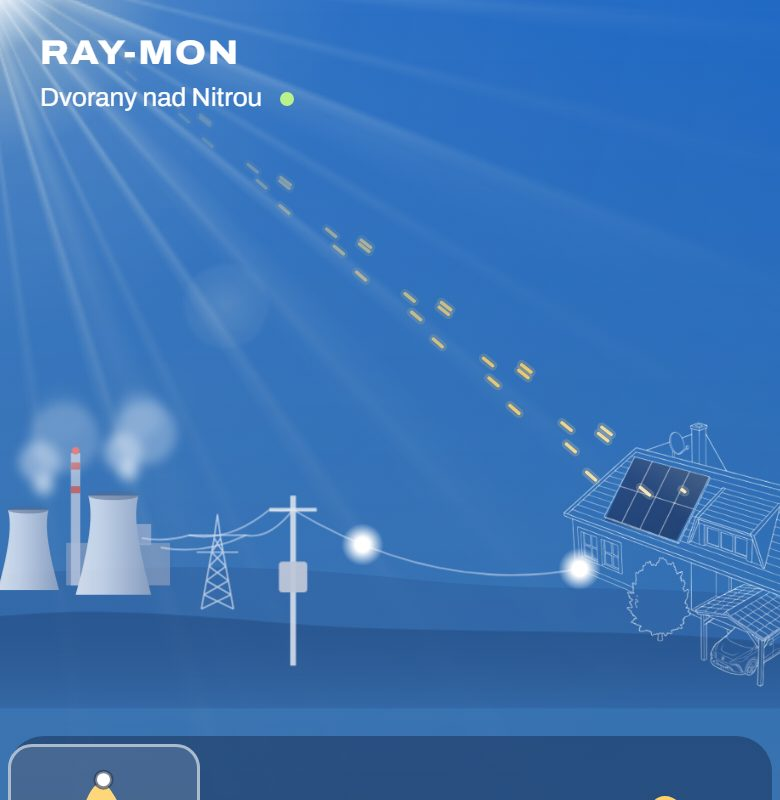
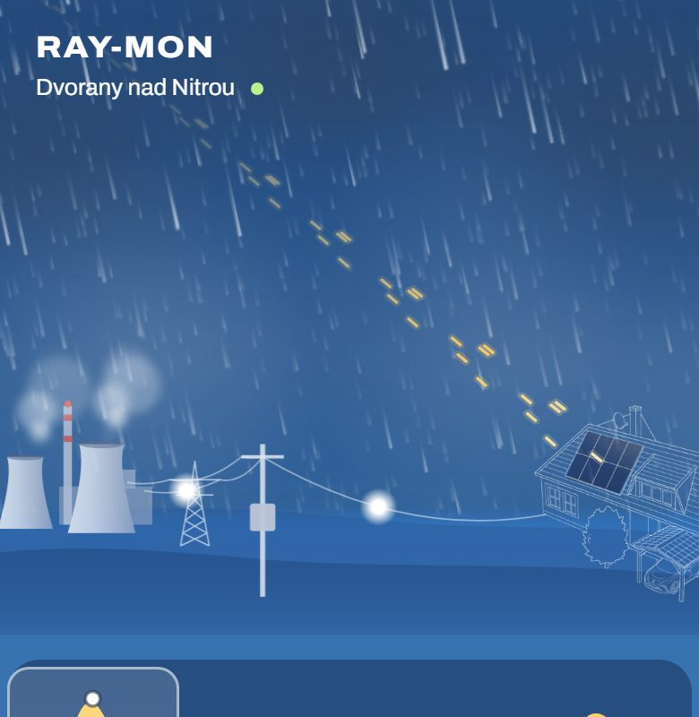
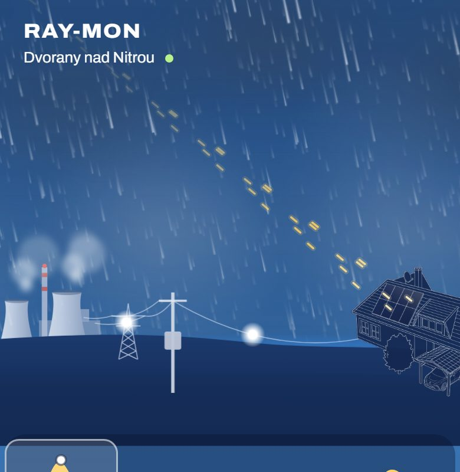
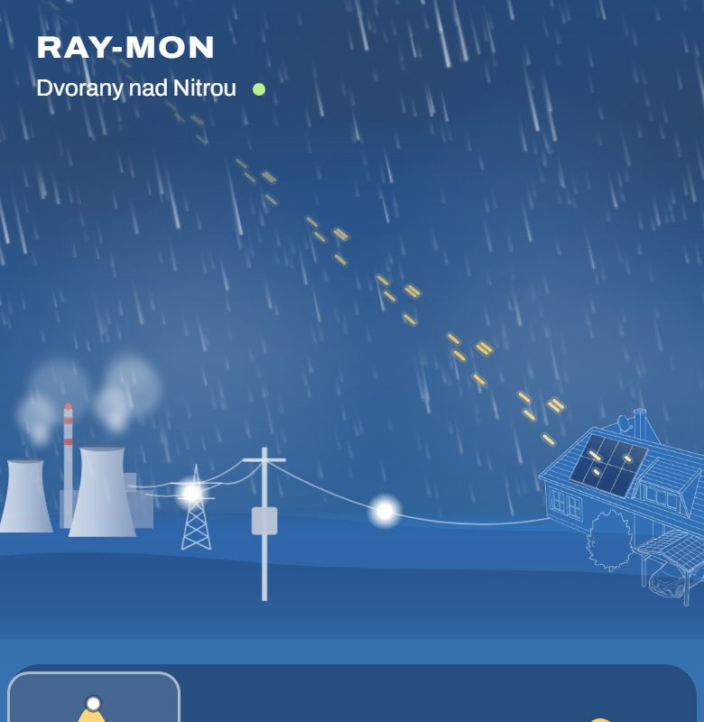
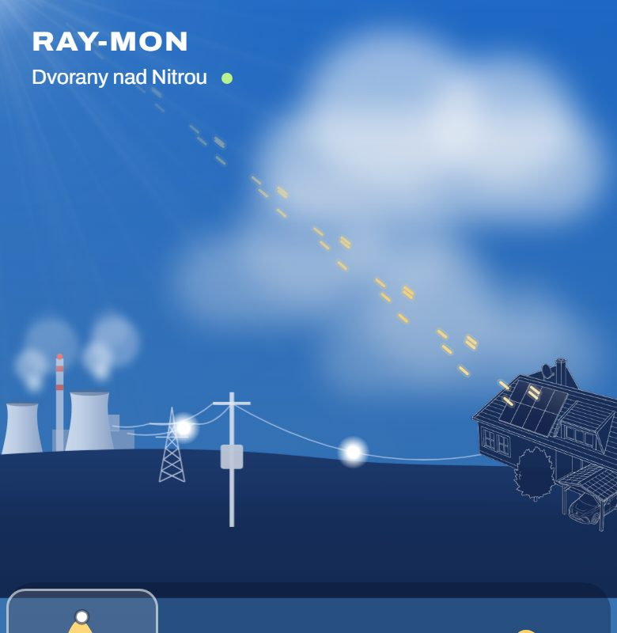
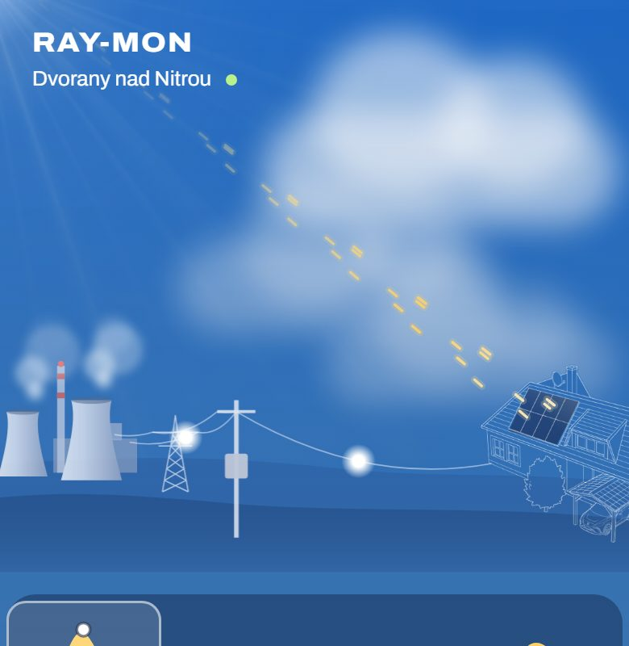
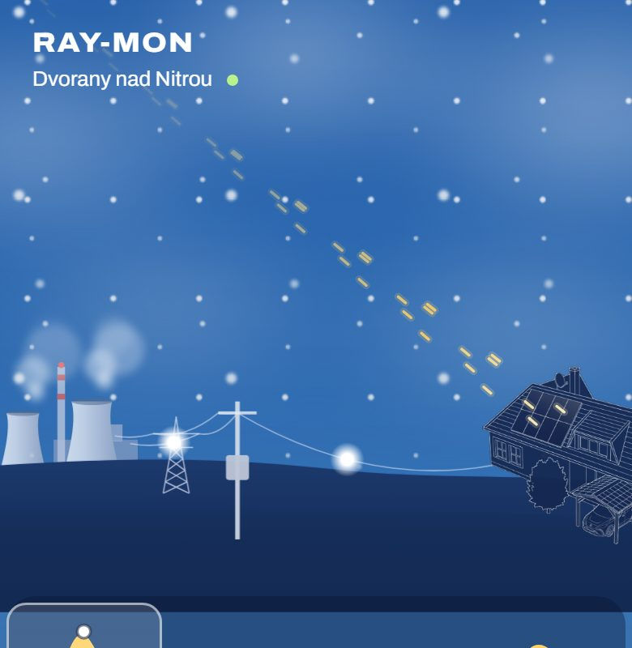

Scéna na karte Teraz: dom na zemi, impulzy a počasie za scénou
17. 11. 2026. Snímky sú zo skutočnej appky (testovacie dáta, 13:00) s ručne vloženou scénou a počasím. Tok 4,2 kW a 2,6 kW do siete je vymyslený, aby bolo vidno impulzy. Impulzy nižšie sú živé SVG, nie snímky.
Rozhodnuté 17. 11. 2026: dom ani A, ani B – podľa obrázka od používateľa: plný (svetlé steny a strecha, tmavé okná, modrý strom), v približne dnešnej veľkosti, na kopci, ktorý k nemu vystúpi. Impulzy B (výboj s chvostom), počasie B (pevná zem a dom). Odporúčanie nižšie je pôvodné, pred rozhodnutím.
1 · DomDom stojí na zemi
Dnes stena domu končí asi 30 jednotiek nad kopcom, preto dom visí. Kresba nemá vlastnú čiaru zeme, takže zem pod ňou musí byť tam, kde končí stena – zmenšením a posunutím nadol stena sadne na kopec a strom, prístrešok a auto stoja na lúke pred ním.
Dnes

A · o tretinu menší

- stena presne na kopci, celý dom aj s autom na scéne
- viac oblohy nad domom, lúče sú dlhšie
- panely sú menšie, lúče padajú na menšiu plochu
B · o pätinu menší

- dom ostáva výrazný, panely väčšie
- aby stena sadla na kopec, spodok prístrešku a auta odíde pod okraj scény
Číslo spotreby „nad domom“ sa po zmenšení posunie nižšie, nad novú strechu.
2 · VedenieBody ako elektrické impulzy
Hore celá scéna v skutočnej veľkosti, pod ňou výrez vedenia zväčšený asi 2,5×. Farba ostáva: zlatá von do siete, modrobiela dnu. Pri obmedzenom pohybe ostáva šípka ako dnes.
Dnes
Žiara s polomerom 9, 1–3 body.
A · iskry
- najjednoduchšie: len menšie body, dvakrát viac a rýchlejšie
- skôr „perličky na šnúrke“ než impulzy
B · výboj s chvostom
- drôt sa na krátkom úseku rozžiari a svetlo beží ďalej – ako signál vo vlákne
- pravidelné, pôsobí skôr technicky
C · dávky s blikaním
- krátke výboje idú po dvoch–troch tesne za sebou a mihotajú sa – tak vyzerajú neuróny
- počet dávok ostáva podľa výkonu (1–3)
- najviac animovaných prvkov (pri 3 dávkach 9 výbojov); na S22 overiť plynulosť
3 · PočasieObloha nad zemou a za domom
Dnes padá dážď a sneh cez kopce aj cez dom a oblak môže ležať pred strechou. Vo všetkých troch možnostiach sa počasie zastaví na obzore (línia kopcov), ktorý appka vypočíta z polohy scény. Líšia sa tým, čo sa stane s domom a zemou.
A · počasie končí na obzore

- najjednoduchšie: jedna maska na vrstve počasia
- dom ostáva priehľadná čiarová kresba
- za domom stále prší (cez kresbu ho vidno)
- počasie stojí voči obrazovke, scéna sa posúva s kartou – pri posunutí karty obzor nesedí, kým ho appka nepočíta aj pri posúvaní
B · pevná zem a silueta domu

- najrealistickejšie: zem, dom aj elektráreň zakryjú všetko za sebou, aj oblak
- sedí aj pri posúvaní karty – zakrýva to samotná scéna, nič sa neprepočítava
- mení vzhľad: dom je tmavomodré teleso s bielymi čiarami, zem pevná tmavá plocha
- nový súbor so siluetou domu (vypočítaný z kresby) – pri zmene kresby ho treba vyrobiť znova
- v noci treba siluete a zemi tmavší odtieň
C · priehľadný dom, za ním sucho

- dom ostáva čiarová kresba, a predsa za ním neprší
- najzložitejšie: maska počasia s dierou v tvare domu sa musí prepočítať pri každom posunutí karty (výkon na S22)
- za domom chýba šero dažďa, dom preto mierne „svieti“
B pri oblačne

C pri oblačne

B pri snežení

OdporúčanieDom A, impulzy C, počasie B
Dom o tretinu menší jediný stojí celý na zemi bez orezania. Dávky s blikaním najviac pripomínajú impulzy v mozgu. Pevná zem a silueta sú jediné riešenie, ktoré sedí aj pri posúvaní karty bez prepočítavania – ostatné dve počasie len orežú na pevnom mieste obrazovky. Rozhoduješ ty; každú časť sa dá vybrať zvlášť.